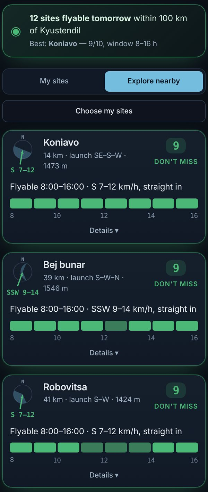

FlyAlarm reads the forecast for every paragliding and hang gliding launch around you, checks the wind against the direction each launch faces, and tells you which sites are flyable, when, and why.

Pick your country and town, then a radius from 25 to 200 km or the whole country. Sites come from the ParaglidingEarth database, refreshed every week.
Choose Conservative, Standard or Performance, and save the launches you actually fly as “My sites” if you like.
Every site gets a score, a flying window and the one reason that decides the day. Tap it for wind at launch, gusts, cloudbase and thermal tops.
Weather apps show you data. FlyAlarm evaluates it against each site's launch conditions and your profile, and gives you an answer.
Every site is checked against its own takeoff direction, at the height of the launch. Wind straight in scores well; crosswind or wind from behind is flagged, however calm the forecast looks.
Conservative, Standard or Performance: each applies its own limits for wind, gusts, turbulence, thermal strength and instability. The same day reads differently for different pilots.
Hour-by-hour scoring between sunrise and sunset shows when conditions open and close, so “flyable” means a concrete window, for example 11:00 to 15:00, not a general impression of the day.
Save the launches you actually fly and FlyAlarm watches only those. One link carries your list from the computer to your phone.
Free during the test period. Works in your browser today; on a phone, add it to your home screen. Alerts on Telegram and native phone apps are in the works.